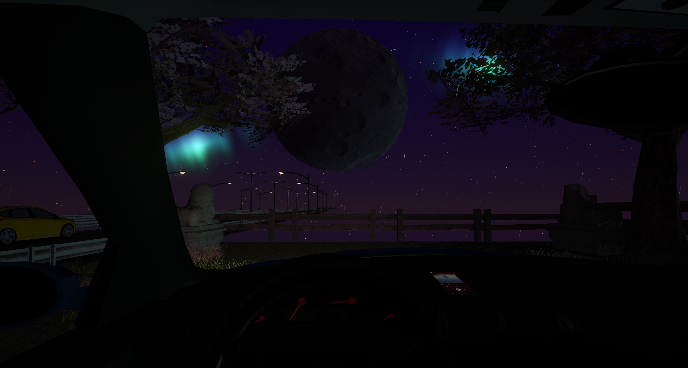
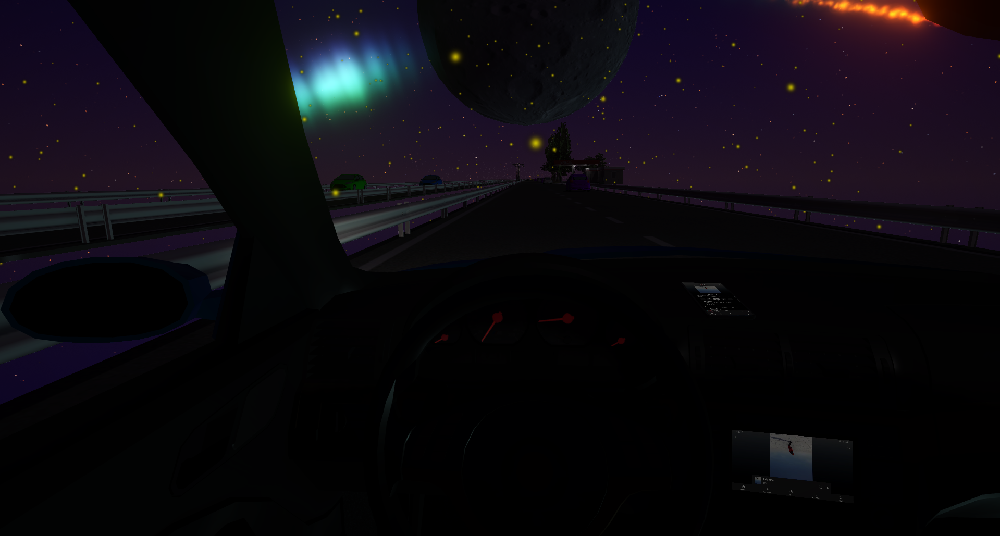

Galería



Explora un mundo de conducción por una autopista. ¡Disfruta y relajate!
Descarga la última versión de Drive in the Sky y comienza tu aventura.
Descargar el JuegoDrive in the Sky es un juego de conducción en una autopista. Compite contra el tráfico, cambia de emisoras de radio, y disfruta de una experiencia inmersiva con IA dinámica para los vehículos.
Hola, soy Lucio, un desarrollador apasionado por los videojuegos y la programación. Este juego es un proyecto personal que combina mi amor por la creatividad y la tecnología. ¡Espero que lo disfruten tanto como yo disfruté creándolo!
Estamos trabajando en: